Photography scoring trial · 31 October 2026
Images 37–72 of 72.
Technical quality and aesthetics on a 1–5 scale ; higher is better. Photography-only policy: excluded non-photographs receive 1.00 for both scores.
DeepSeek V4.1 Flash · no reasoning · RunInfraLuna GPT-6 Luna · high · OpenRouterGemini 3.8 Flash · medium · OpenRouterHaiku Claude 5.5 · low · OpenRouter
P001 37 / 72
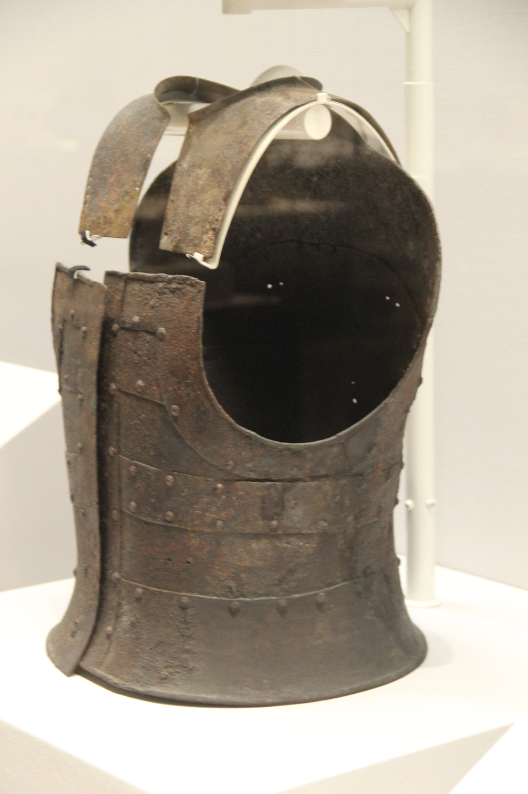
Assessor Tech Aest Ref 3.2 3.3 DeepSeek 4.0 3.0 Luna 3.8 3.8 Gemini 2.6 2.5 Haiku 4.0 3.1
Open original ↗
P037 38 / 72
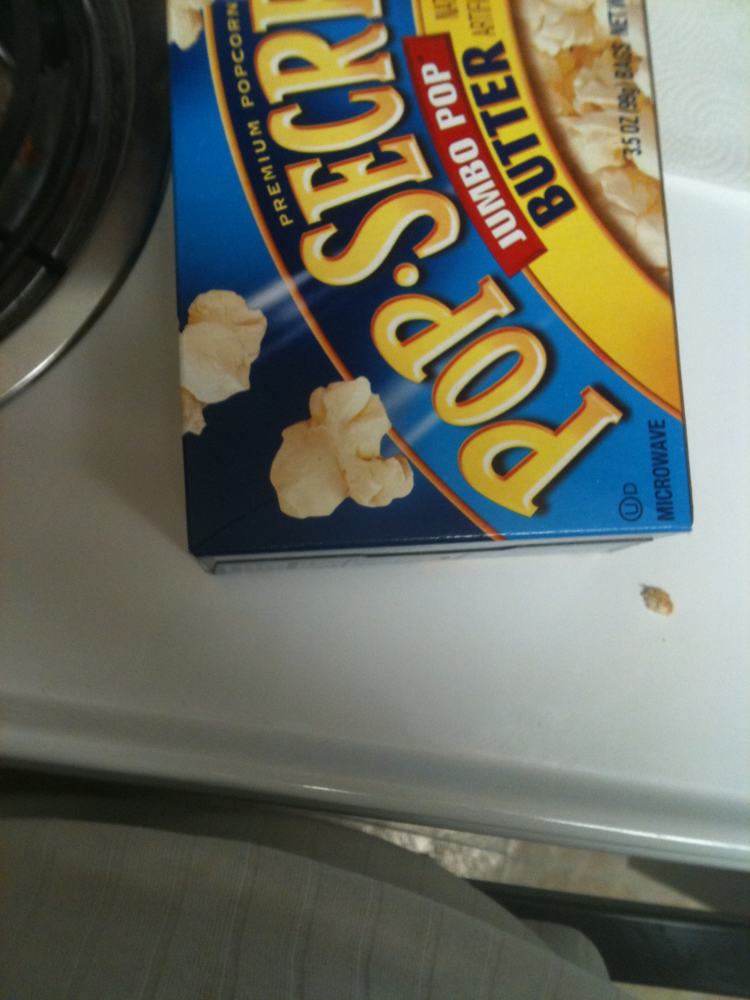
Assessor Tech Aest Ref 3.3 2.5 DeepSeek 3.2 2.2 Luna 3.4 2.5 Gemini 3.0 1.8 Haiku 3.0 2.3
Open original ↗
P066 39 / 72 New image
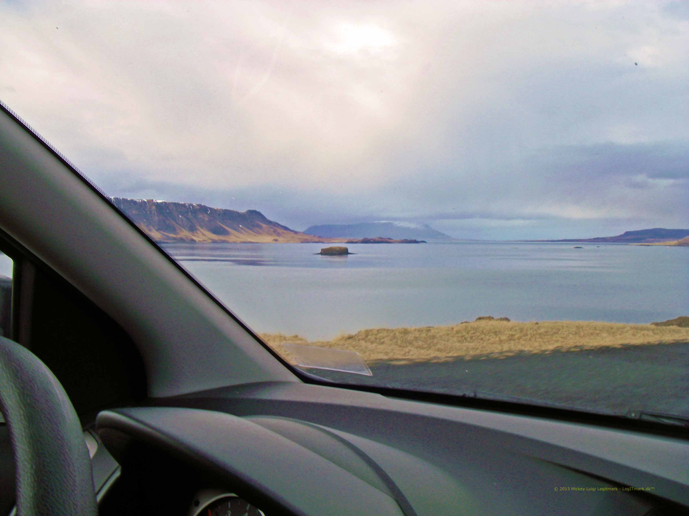
Assessor Tech Aest Ref 3.3 2.9 DeepSeek 3.0 3.2 Luna 3.3 3.1 Gemini 2.9 2.7 Haiku 3.0 3.2
Open original ↗
P058 40 / 72 New image
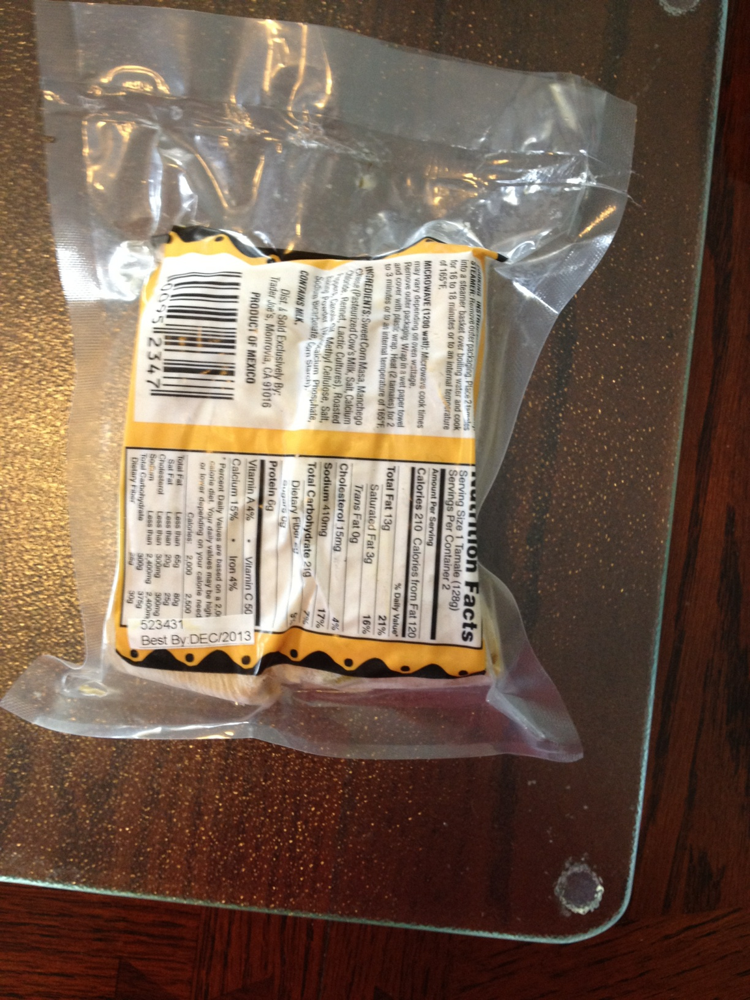
Assessor Tech Aest Ref 3.4 2.8 DeepSeek 3.4 2.3 Luna 3.7 2.8 Gemini 3.6 1.9 Haiku 3.2 2.3
Open original ↗
P040 41 / 72
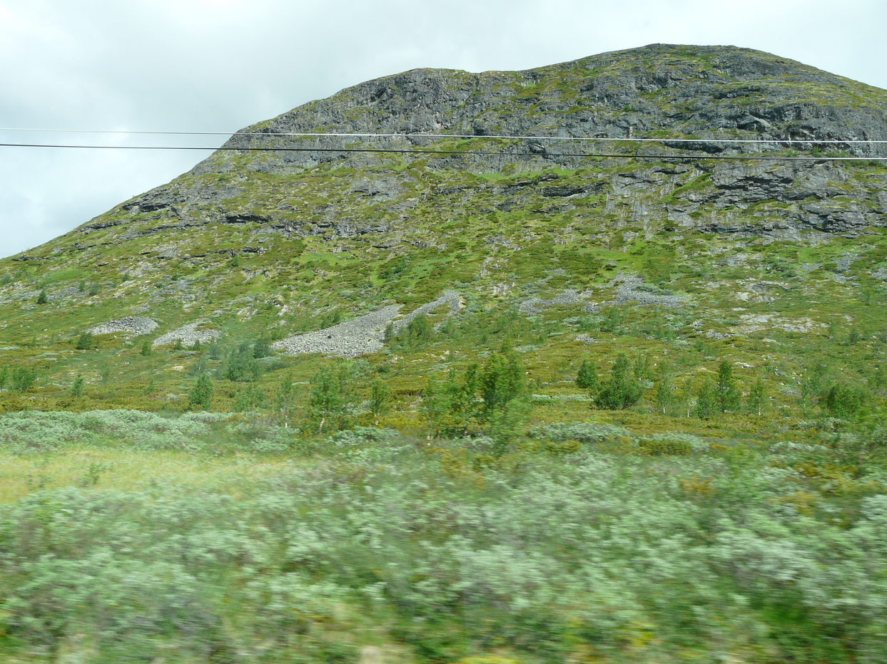
Assessor Tech Aest Ref 3.5 2.8 DeepSeek 2.8 2.6 Luna 3.8 3.3 Gemini 2.8 2.6 Haiku 3.0 2.9
Open original ↗
P019 42 / 72
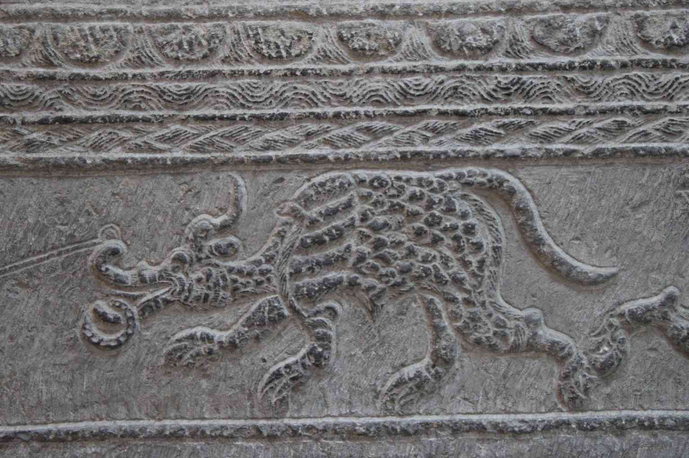
Assessor Tech Aest Ref 3.7 3.7 DeepSeek 4.0 3.6 Luna 3.8 3.9 Gemini 3.5 2.8 Haiku 3.9 3.0
Open original ↗
P049 43 / 72
Assessor Tech Aest Ref 3.7 3.7 DeepSeek 3.5 3.6 Luna 3.8 4.2 Gemini 3.2 3.3 Haiku 3.7 3.6
Open original ↗
P038 44 / 72
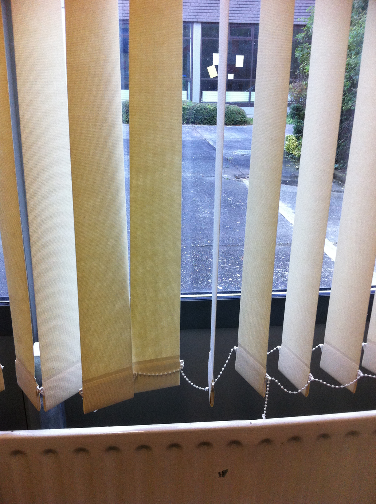
Assessor Tech Aest Ref 3.8 2.9 DeepSeek 3.8 2.8 Luna 3.5 2.9 Gemini 3.1 1.8 Haiku 3.9 2.8
Open original ↗
P067 45 / 72 New image
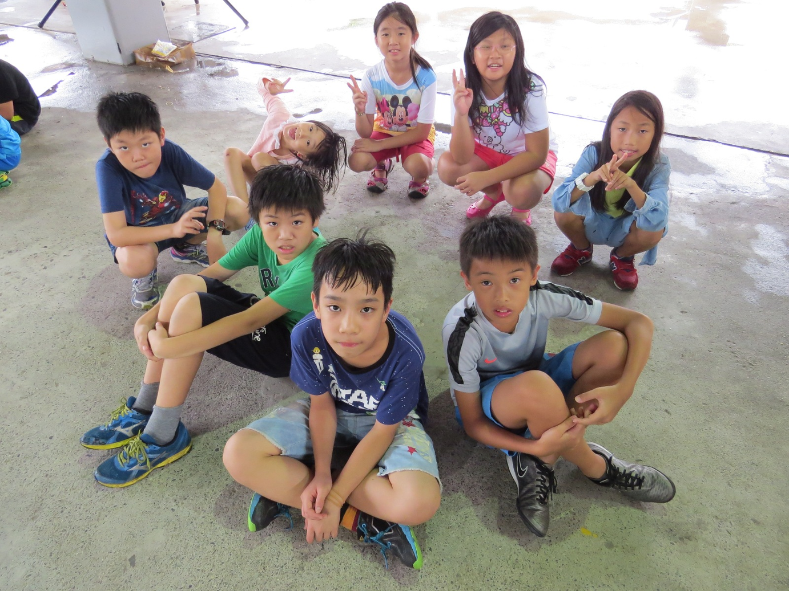
Assessor Tech Aest Ref 3.8 3.6 DeepSeek 3.2 2.8 Luna 4.0 3.6 Gemini 3.8 2.8 Haiku 3.8 3.0
Open original ↗
P071 46 / 72 New image
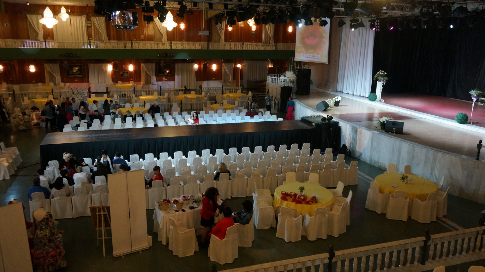
Assessor Tech Aest Ref 3.8 3.2 DeepSeek 3.0 3.4 Luna 3.6 3.1 Gemini 3.6 2.6 Haiku 3.6 3.0
Open original ↗
P013 47 / 72
Assessor Tech Aest Ref 4.0 3.6 DeepSeek 4.2 3.2 Luna 4.2 3.2 Gemini 4.3 2.8 Haiku 4.4 3.0
Open original ↗
P023 48 / 72
Assessor Tech Aest Ref 4.0 3.2 DeepSeek 3.2 2.8 Luna 4.0 3.2 Gemini 3.5 2.4 Haiku 3.8 3.0
Open original ↗
P039 49 / 72
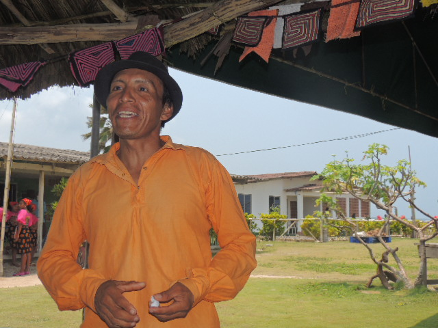
Assessor Tech Aest Ref 4.0 3.6 DeepSeek 3.5 3.6 Luna 3.9 3.8 Gemini 3.0 2.7 Haiku 3.1 3.2
Open original ↗
P072 50 / 72 New image
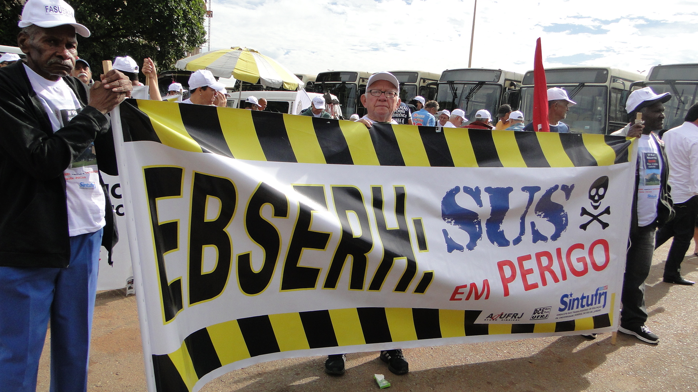
Assessor Tech Aest Ref 4.0 3.6 DeepSeek 4.0 3.2 Luna 4.0 3.8 Gemini 3.9 2.9 Haiku 3.5 3.0
Open original ↗
P010 51 / 72
Assessor Tech Aest Ref 4.1 3.8 DeepSeek 4.0 3.5 Luna 3.5 3.7 Gemini 3.9 2.8 Haiku 3.8 3.4
Open original ↗
P014 52 / 72
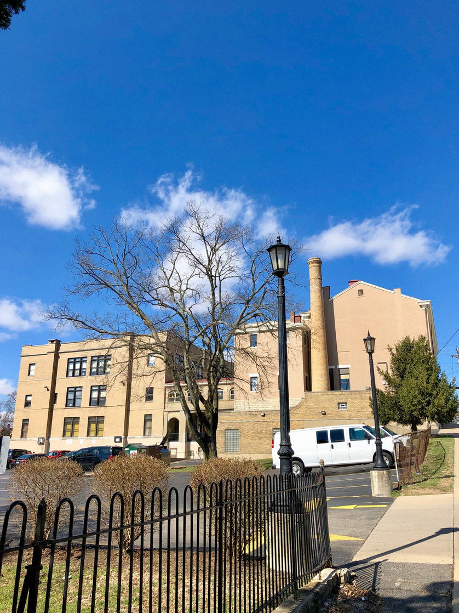
Assessor Tech Aest Ref 4.1 3.3 DeepSeek 3.6 3.2 Luna 3.8 3.3 Gemini 4.2 3.0 Haiku 4.0 3.2
Open original ↗
P041 53 / 72
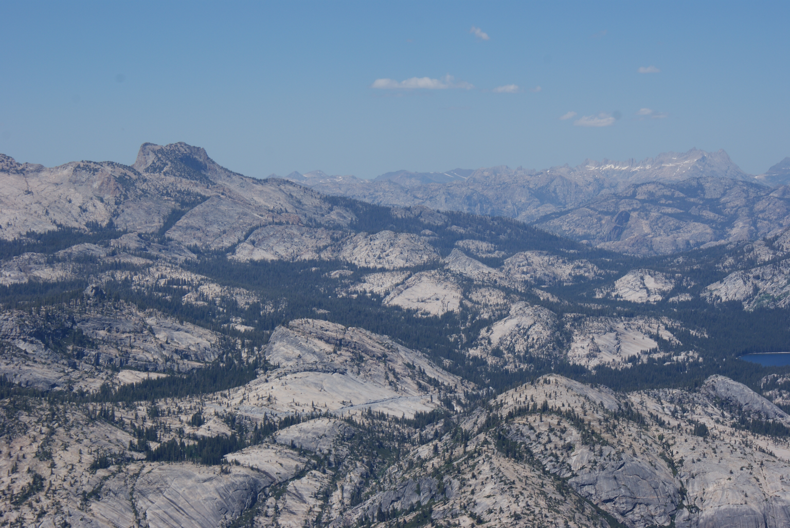
Assessor Tech Aest Ref 4.1 3.6 DeepSeek 3.6 3.4 Luna 4.1 4.2 Gemini 4.0 3.3 Haiku 3.8 3.6
Open original ↗
P043 54 / 72
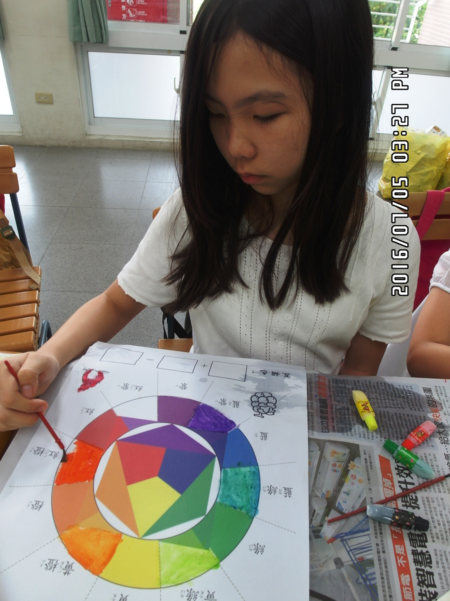
Assessor Tech Aest Ref 4.2 3.4 DeepSeek 3.3 3.2 Luna 4.0 3.5 Gemini 3.3 2.6 Haiku 3.6 2.8
Open original ↗
P059 55 / 72 New image
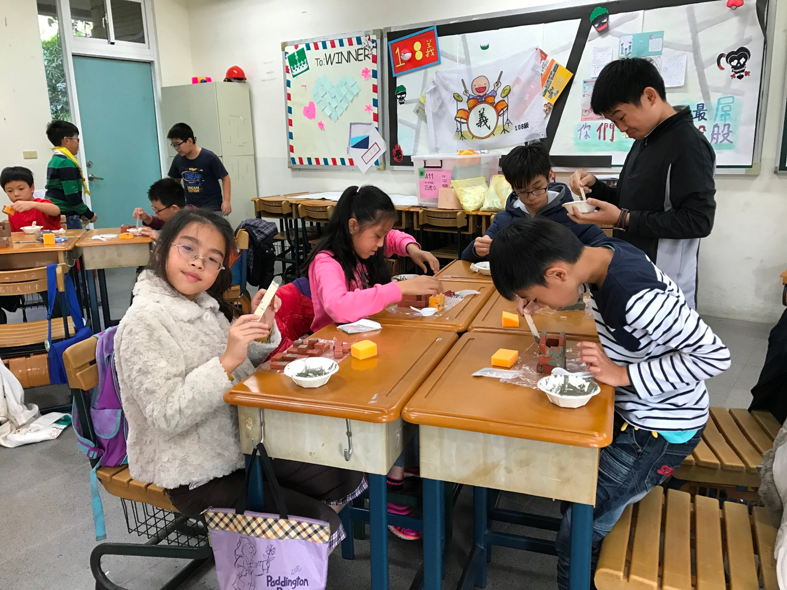
Assessor Tech Aest Ref 4.2 3.6 DeepSeek 3.8 3.2 Luna 4.5 3.8 Gemini 4.2 2.8 Haiku 3.8 3.4
Open original ↗
P021 56 / 72
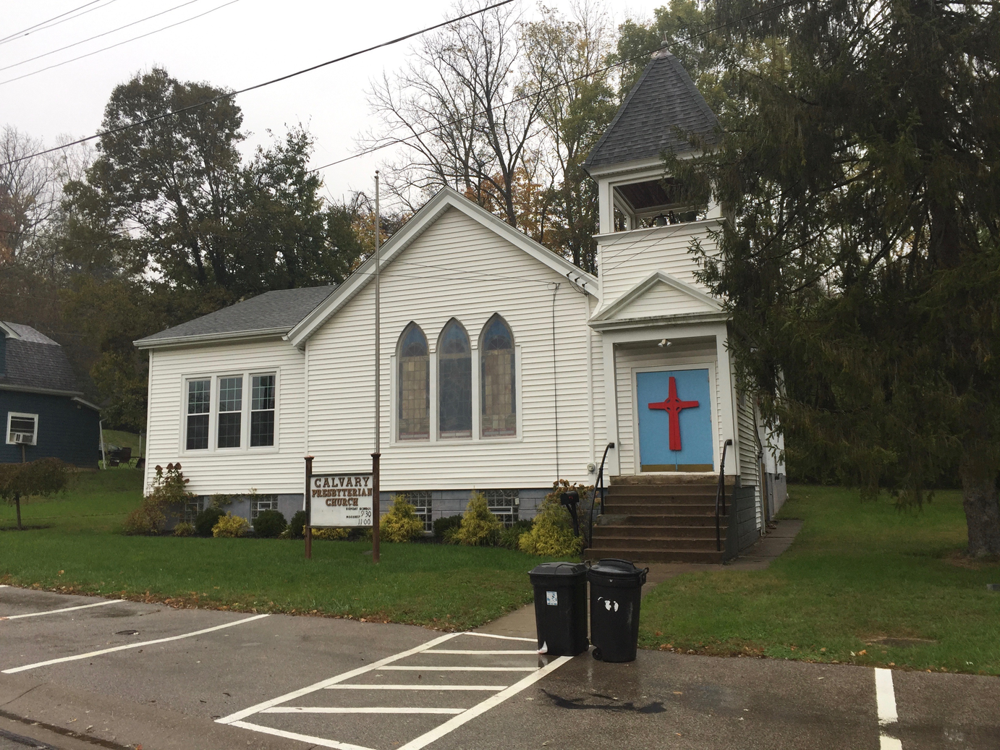
Assessor Tech Aest Ref 4.3 3.1 DeepSeek 3.8 2.8 Luna 4.0 3.2 Gemini 3.2 2.7 Haiku 3.9 2.8
Open original ↗
P050 57 / 72
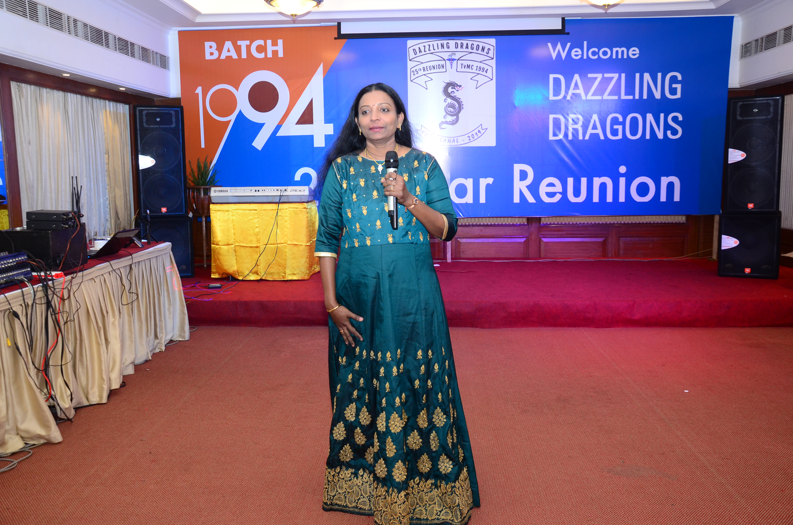
Assessor Tech Aest Ref 4.3 3.1 DeepSeek 3.6 3.2 Luna 4.0 3.2 Gemini 4.2 2.7 Haiku 3.9 3.0
Open original ↗
P017 58 / 72
Assessor Tech Aest Ref 4.4 3.9 DeepSeek 4.2 3.6 Luna 4.0 3.8 Gemini 3.1 3.0 Haiku 3.9 3.2
Open original ↗
P018 59 / 72
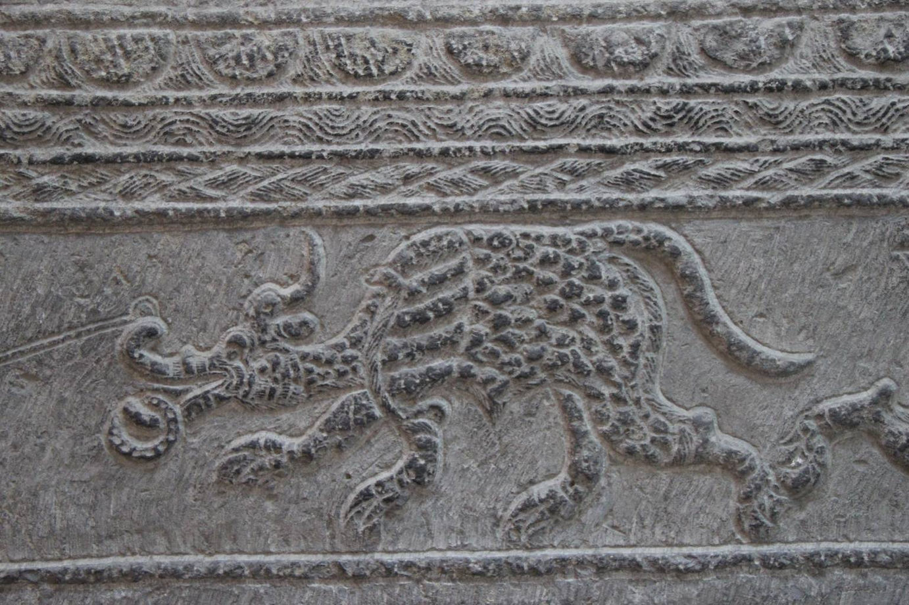
Assessor Tech Aest Ref 4.4 3.9 DeepSeek 4.2 3.2 Luna 4.0 3.7 Gemini 3.6 3.1 Haiku 4.0 3.4
Open original ↗
P022 60 / 72
Assessor Tech Aest Ref 4.4 3.3 DeepSeek 3.8 2.8 Luna 3.8 3.2 Gemini 3.1 2.3 Haiku 3.6 2.6
Open original ↗
P044 61 / 72
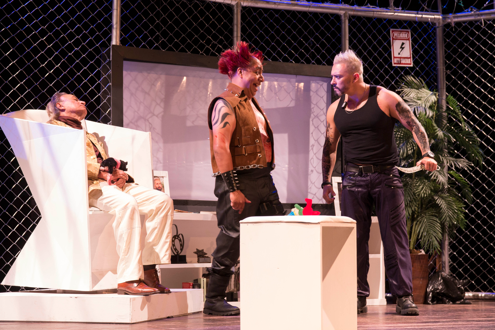
Assessor Tech Aest Ref 4.4 3.9 DeepSeek 4.0 4.0 Luna 4.0 3.7 Gemini 4.2 3.5 Haiku 3.9 3.4
Open original ↗
P045 62 / 72
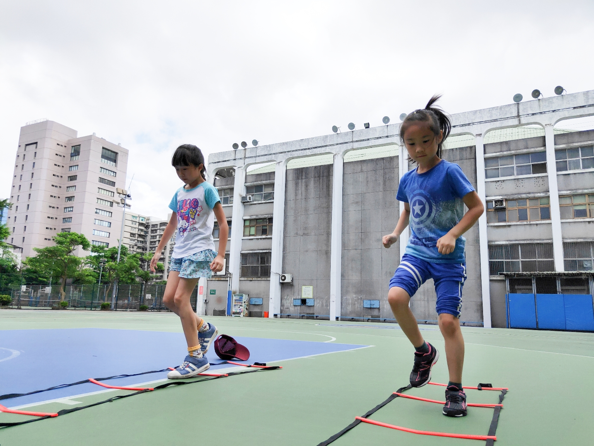
Assessor Tech Aest Ref 4.5 3.9 DeepSeek 4.1 3.2 Luna 4.2 3.8 Gemini 3.9 3.1 Haiku 4.1 3.2
Open original ↗
P060 63 / 72 New image
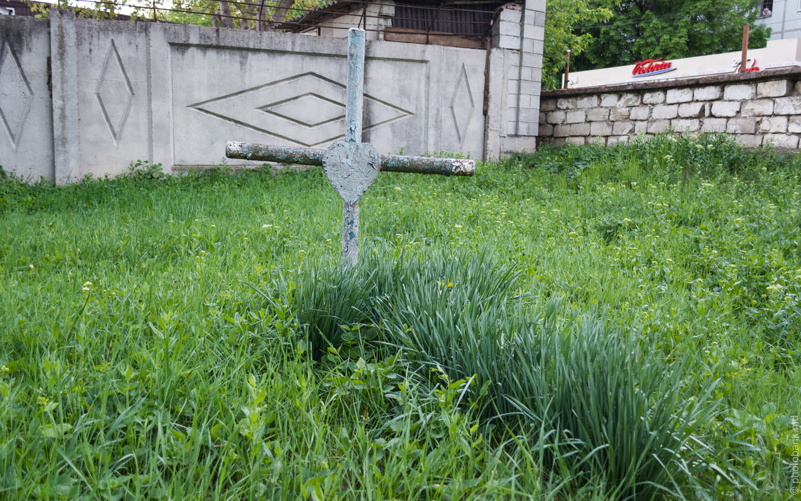
Assessor Tech Aest Ref 4.5 3.4 DeepSeek 4.1 3.6 Luna 4.4 3.6 Gemini 4.2 2.9 Haiku 3.9 3.2
Open original ↗
P061 64 / 72 New image
Assessor Tech Aest Ref 4.5 3.4 DeepSeek 4.2 3.2 Luna 4.2 3.6 Gemini 3.5 2.9 Haiku 3.9 3.2
Open original ↗
P063 65 / 72 New image
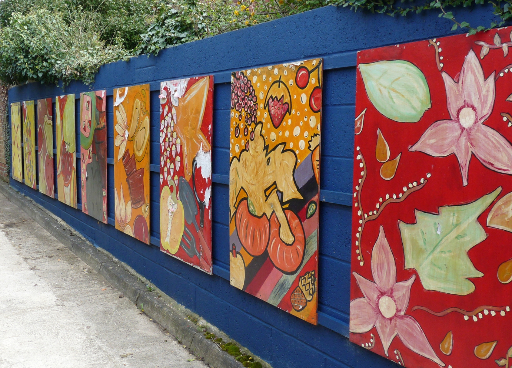
Assessor Tech Aest Ref 4.5 4.1 DeepSeek 3.8 4.0 Luna 4.1 4.2 Gemini 4.2 3.5 Haiku 3.9 3.7
Open original ↗
P064 66 / 72 New image
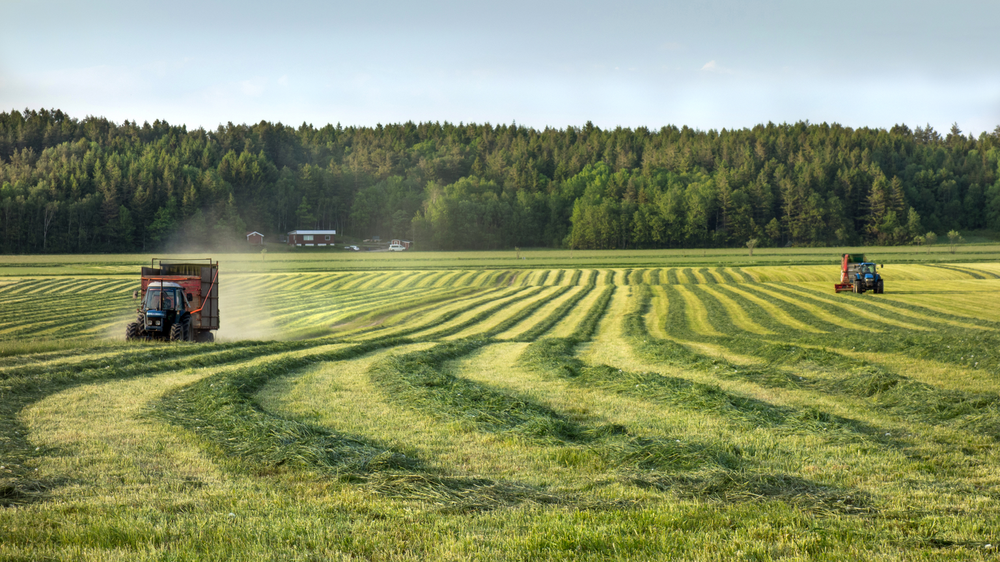
Assessor Tech Aest Ref 4.5 4.5 DeepSeek 4.4 4.3 Luna 4.5 4.4 Gemini 3.5 3.6 Haiku 4.4 4.0
Open original ↗
P009 67 / 72
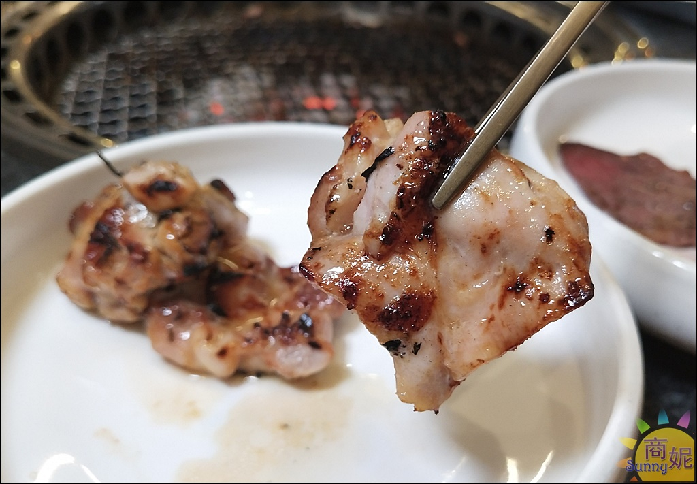
Assessor Tech Aest Ref 4.6 3.8 DeepSeek 4.0 3.5 Luna 4.0 3.8 Gemini 3.5 3.1 Haiku 3.9 3.6
Open original ↗
P042 68 / 72
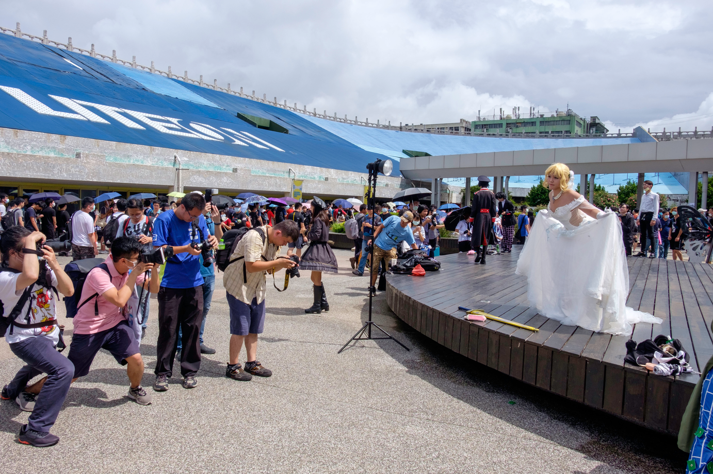
Assessor Tech Aest Ref 4.6 4.0 DeepSeek 4.0 4.0 Luna 4.4 3.6 Gemini 3.7 3.1 Haiku 4.2 3.4
Open original ↗
P065 69 / 72 New image
Assessor Tech Aest Ref 4.6 4.3 DeepSeek 4.2 4.0 Luna 4.3 4.1 Gemini 4.3 3.5 Haiku 4.0 3.8
Open original ↗
P046 70 / 72
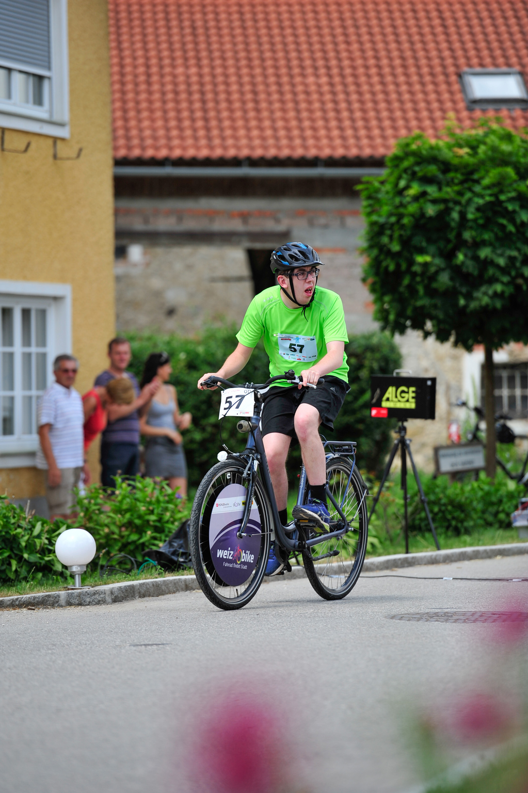
Assessor Tech Aest Ref 4.7 3.8 DeepSeek 4.3 3.6 Luna 4.4 3.7 Gemini 4.6 3.3 Haiku 4.0 3.6
Open original ↗
P062 71 / 72 New image
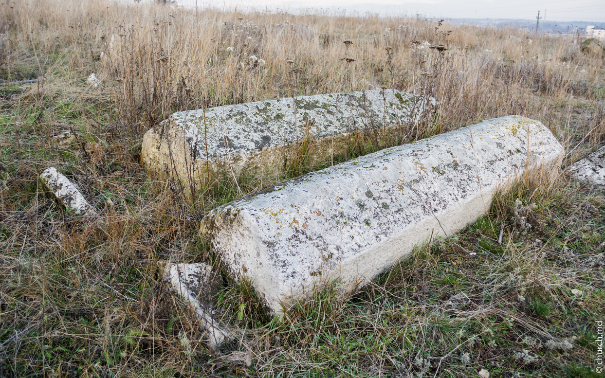
Assessor Tech Aest Ref 4.7 3.5 DeepSeek 4.2 3.6 Luna 4.3 3.6 Gemini 4.3 3.0 Haiku 4.4 3.0
Open original ↗
P069 72 / 72 New image
Assessor Tech Aest Ref 4.8 3.8 DeepSeek 4.2 3.6 Luna 4.8 4.3 Gemini 4.6 3.3 Haiku 4.4 3.2
Open original ↗
All 72 corpus images are included: the original 50 plus 22 newly selected images. An “Outside photo scope” badge records the reference eligibility decision; model disagreements remain visible.
Images are the exact delivered PNGs, scaled to fit without cropping. Select an image for full resolution; hover over a score for recorded evidence. Missing valid ratings are marked invalid or unscorable.
Displayed scores have one decimal; CSV retains exact two-decimal scores, per-task status, evidence and validation errors. The 1.00 floor expresses suitability for a photography collection, not the artistic merit of a design or painting.